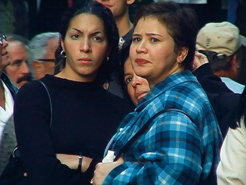
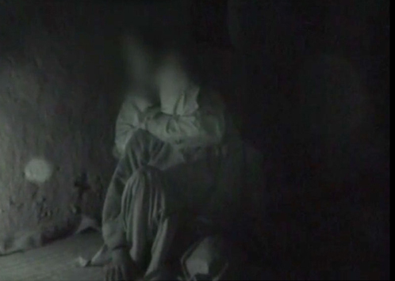

O'Say Can you See 2001/2016


O'Say Can you See
Two-channel digital video, colr, sound
Poitras's installation O'say Can You See consists of a
double video projection on a two-sided screen. One side
presents a short film depicting slow-motino shots of
people gazing at the unseen remains of the World Trade
Center in the days following the 9/11 attacks. (Also
titled O'Say Can You See, it was originally shown in 2011
and is the only aspect of works on view that was not made
specifically for this exhibition.) Their shocked, mouring
faces prompt us to meditate on the scene that we know is
before them. Over these visuals plays a haunting audio
track: the national anthem, altered and looped by Poitras,
as it was performed at New York's Yankee Stadium
During Game Four of the 2001 World Series on October 31,
2001. The other side of the screen presents U.S. military
video of the interrogations of two prisoners in Afghanistan,
also taking place in the months immediately following
the 9/11 attacks. The prisoners are Said Boujaadia and Salim
Hamdan, both of whom were subsequently transferred to
Guantanamo. Poitras detailed the trial of Hamdan, who had
been Osama bin Laden's driver, in her 2010 film The Oath.